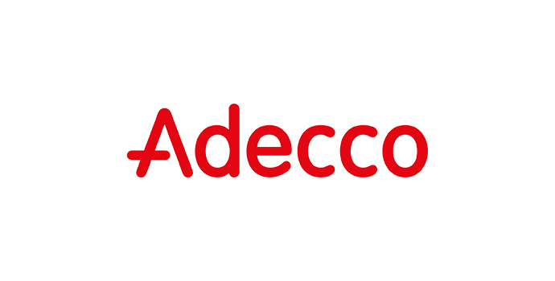
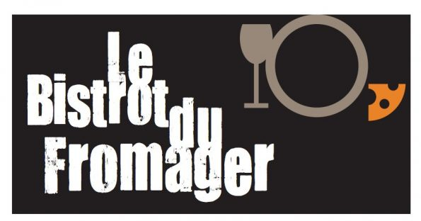

-

2018
Intérimaire
Adecco
Inventoriste en stock cher Gifi
Mise en rayon chez Gifi
Manutentionnaire
-
2017
CDD
A L'ASSOCIATION DU PRADO
Saisie des relevés bancaires des majeurs protégés pour 1320 dossiers.
Vérification et contrôle des congés payés et faire des graphiques pour le rapport d'activité
Affectation des dépenses et des recettes pour les 1320 dossiers.
-
2016
STAGE DE COMPTABILITÉ
CABINET PARTEXIA
Suivi des dossiers clients dans le cadre de la comptabilité et fiscalité.
Classement de dossiers clients et puis archivage.
-

2016
STAGE d'été
PSC DE LA SOCIÉTÉ GÉNÉRALE
Gestion des dossiers clients qui possèdent des titres américains.
Contrôle de la complétude de ces dossiers par le biais des normes américaines.
Classement de dossiers clients et puis archivage.
-
2016
: STAGE DE COMPTABILITÉ d'été
CABINET PAQUIER
Suivi des dossiers clients dans le cadre de la comptabilité.
Classement de dossiers clients et puis archivage.
-
2015
STAGE d'été
PSC DE LA SOCIÉTÉ GÉNÉRALE
Gestion des chèques clients et archive de dossiers clients.
-

2014
: STAGE d'entreprise
BISTROT DU FROMAGER
Gestion de l'entreprise dans le domaine comptabilité : Bilan et Compte de résultat.
Gestion des stocks/Service en salle.
-
2011
Validation du Stage d'entreprise de découverte pour la troisème
VEOLIA
Gestion d'entreprise dans le domaine déchetterie : stockage, tri des déchets.